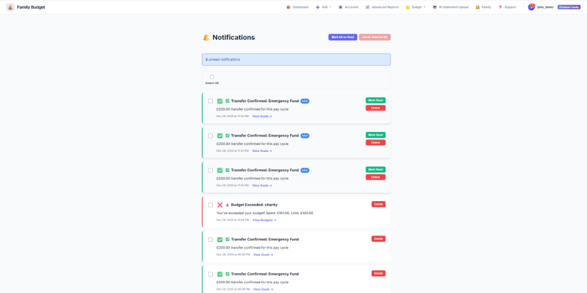
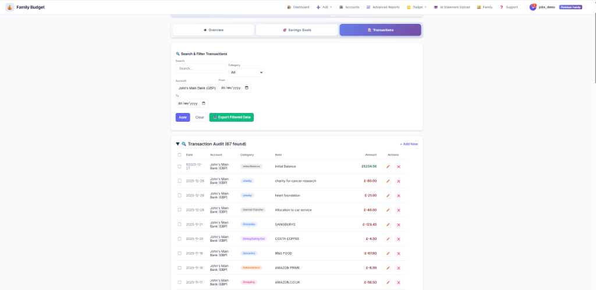
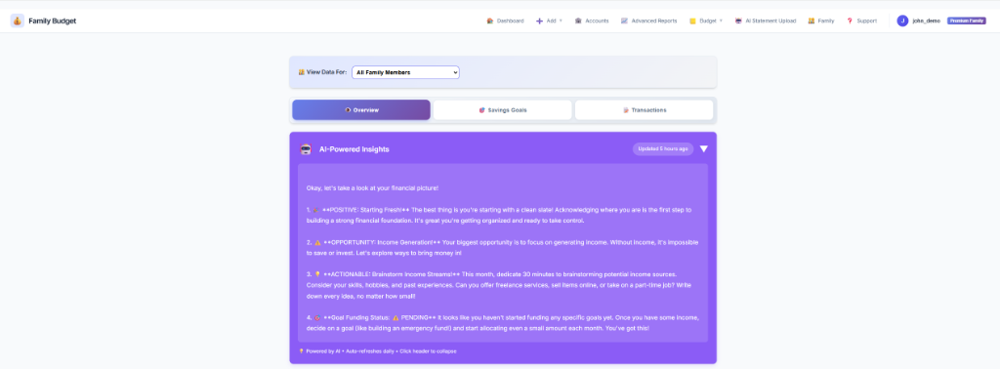
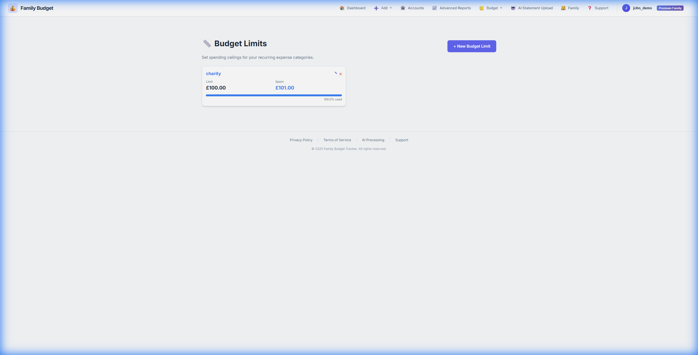
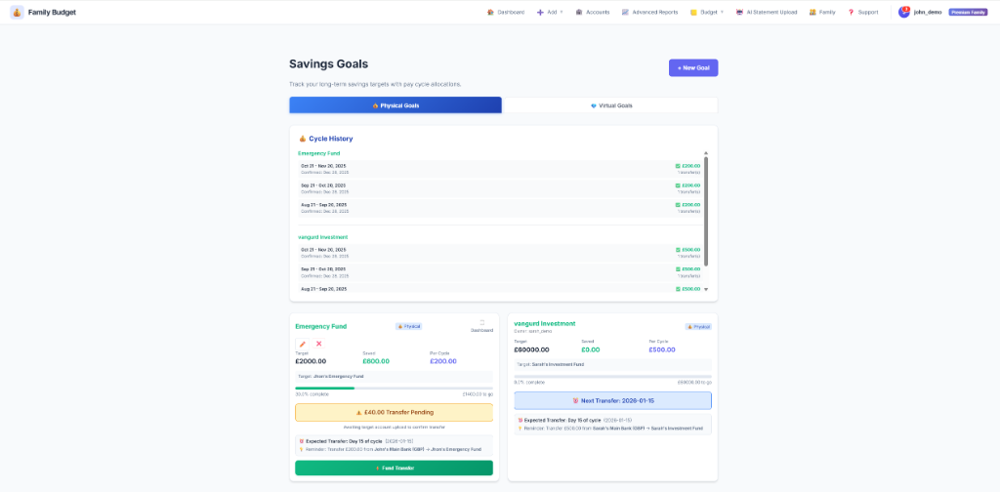
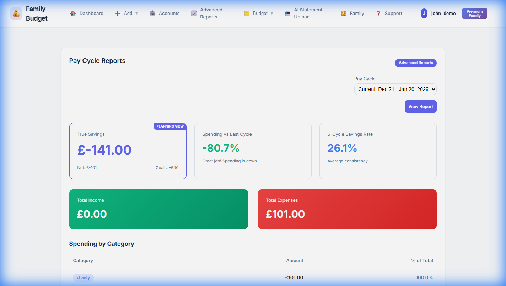
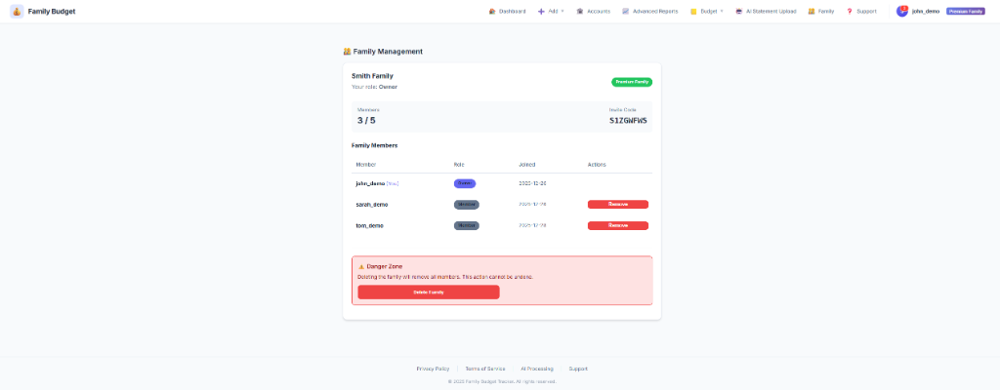

📖 User Manual
Complete guide to all features in Family Budget Tracker. Learn how to make the most of your budgeting experience.
1. Dashboard
Your dashboard is the central hub showing your financial overview for the current pay cycle.

The main dashboard showing AI insights and financial summary
1.1 Dashboard Tabs
The dashboard has three main tabs:
- Overview: Financial summary, AI insights, and spending breakdown
- Savings Goals: Quick view of your physical and virtual goals
- Transactions: Search, filter, and manage transactions
1.2 Key Metrics
- Income: Total money received this pay cycle
- Expenses: Total spent (excluding transfers and refunds)
- Physical Goals: Money transferred to savings accounts
- Virtual Goals: Money mentally allocated (still in checking)
- Safe to Spend: Income - Expenses - Physical - Virtual
1.3 AI-Powered Insights
Premium users get personalized spending insights updated daily:
- Spending trends and patterns
- Budget recommendations
- Unusual spending alerts
- Savings opportunities
1.4 Family Member Filter
In family accounts, filter the dashboard to see:
- All Family: Combined view of everyone's finances
- Individual Member: Just one person's spending
2. Notifications
Stay updated with critical alerts. Notifications are available for everyone (Free & Premium).
Full history of your notifications and alerts
2.1 When will I get a notification?
The system sends alerts for specific events:
- Budget Warnings: When you exceed 90% or 100% of a category limit.
- Recurring Transactions: When a scheduled transaction (bill, subscription) is processed.
- Savings Goals: When an automatic goal allocation is made.
- Family Updates:
- Owner: Gets notified when someone joins (Success) or leaves (Info).
- Member: Gets notified if they are removed by the owner (Warning).
- Subscription: When your Free Trial is ending (3 days prior).
Note: We do not send marketing spam. These are strictly functional alerts to help you manage your money.
3. Accounts Management
Manage all your bank accounts, credit cards, and savings accounts in one place.
3.1 Adding an Account
- Click Accounts in navigation
- Click "+ Add Account"
- Fill in:
- Account Name: e.g., "Chase Checking"
- Account Type: Bank Account or Credit Card
- Currency: USD, GBP, EUR, INR, etc.
- Initial Balance & Date:
- CRITICAL: Must match actual bank balance on the selected date.
- Bank Accounts: Positive value (e.g., 5000) for assets.
- Credit Cards: Negative value (e.g., -1200) for debt.
- Budgeting Account Checkbox:
- Check this for cash-flow accounts (Checking, Credit Cards).
- Uncheck for investment or mortgage accounts.
- Click "Add Account"
4. Transactions
Add, edit, and manage all your financial transactions.
Search, filter, and audit your transaction history
4.1 Adding a Transaction Manually
- Click Add → Transaction
- Select transaction type: (Expense, Income, Internal Transfer)
- Fill in details (Date, Amount, Account, Category, Note)
- Click "Add Transaction"
4.2 Internal Transfers
When moving money between your own accounts, use "Internal Transfer" to create linked debit/credit entries.
4.3 Recurring Transactions
Set up automatic monthly transactions (Rent, Netflix, Gym).
- Free Plan: Max 10 Recurring Transactions.
- Premium Plan: Unlimited Recurring Transactions.
- Click Add → Recurring Transaction
- Fill in transaction details
- Set recurrence day (1-31)
- Choose status: Active or Paused
4.4 Smart Global Cache & Overrides
To save you time, the app uses a Global Merchant Cache that learns from all users. If many users categorize "Uber" as "Transport", it will be default for you too.
- User Overrides: If you prefer a different category, just change it once. The app will "remember" your preference for all future transactions from that merchant.
- Bulk Override: When editing a transaction, check the "Update all future transactions" box to apply your category correction globally across your account.
4.5 Data Export (Premium)
Need to analyze data in Excel? You can export your filtered view.
- Go to the Transaction Audit tab.
- Apply any filters (Date, Category, Account, Family Member).
- Click the "Export to CSV" button.
- The CSV file will download with only the filtered transactions.
5. AI Statement Upload & Insights (Premium)
Upload bank statements for auto-extraction and get daily AI-powered insights on your finances.
Upload statements and review extracted transactions
5.1 How It Works
- You upload a PDF or image of your bank statement (Max ~10 pages)
- Google Gemini AI "reads" the statement like a human
- Extracts all transactions with 95%+ accuracy
- Categorizes transactions automatically
- Detects duplicates to prevent double-counting
- You review and confirm
5.2 🧠 AI Insights
Premium members get a personalized financial analysis, refreshed every 24 hours.
6. Magic Drop Automation (Premium)
Trigger an Invisible Sync of your statements by connecting a Google Drive folder.
6.1 Setup Instructions
- Create a folder named "MagicDrop" in your Google Drive.
- Share the folder with our service bot as an Editor (find the bot email in Settings → Magic Drop).
- Paste the folder link into the Magic Drop settings in the app.
- Drop and Forget: Any statement dropped into this folder will be processed automatically every 60 seconds.
Our bot can only see the specific folder you share with it. It is blind to the rest of your Drive. You can evict the bot and kill the connection instantly by removing its access in your Google Drive settings at any time.
6.2 Processing Preferences
Customize how Magic Drop handles your files in Settings → Magic Drop:
- Enable Magic Drop: Toggle the entire automation on/off.
- Silent Import: Process files quietly without sending a notification for every success.
- Auto-Decrypt: Enable the app to attempt unlocking PDFs using your stored passwords.
7. Spending Trends (Premium)
Long-term visibility into your financial health across multiple pay cycles.
7.1 The 5+1 Logic
The Trends dashboard displays your last 5 completed pay cycles plus your current cycle. This allows for real-time comparison against your recent historical average.
7.2 Trend Modes
- Wealth Gap: Analysis of your Income vs Expenses over time.
- Safety Net: Overview of your savings and emergency fund buildup.
- AI Trend Insights: Deep-dive analysis of your 6-month patterns, highlighting long-term wins and areas for optimization.
8. Budget Limits
Set monthly spending limits for each category and track your progress.
Visual progress bars for category budgets
Note: Alerts (90% / 100%) are based on the Calendar Month, not your Pay Cycle.
9. Savings Goals
Set financial goals and track your progress automatically.
9.1 Physical vs Virtual Goals
See Getting Started for a detailed comparison.
Track your savings goals progress
9.2 Dashboard Pinning
Want to see a goal's progress every time you log in?
- On the Savings Goals page, check the "Dashboard" box on any goal card.
- The goal's progress bar will appear on your main Dashboard for quick access.
9.3 History & Visualization
- Cycle History: In the Savings Goals page, see a complete history of every cycle's allocation status (Funded/Pending).
- Virtual Vault Pie Chart: For Virtual Goals, view a visual breakdown of your "Mental Vault" to see exactly how your checking account balance is allocated.
9.4 Physical Goal Actions
- ⚡ Fund Transfer: Log a manual transfer you made.
- Important: If the transaction exists in your statement, uncheck "Source Side" to avoid duplicates.
9.5 Virtual Goal Actions
- ⚡ Quick Fund: Allocate money (creates internal ledger entry).
9.6 Best Practices for Goal Matching
How the Matching Algorithm Works
The system automatically matches transactions to goals by analyzing the note/description field. Here's how it works:
- Virtual Goals: When you use "Quick Fund", the system creates a transaction with
note:
"Allocation to {Goal Name}" - Physical Goals: When you use "Log Transfer", the system creates a transaction
with note:
"Transfer for {Goal Name}" - Exact Match Required: The goal name in the note must exactly match your goal's name (case-insensitive)
✅ DO's
- Use the built-in buttons: "Quick Fund" (virtual) or "Log Transfer" (physical) - these automatically format notes correctly
- Keep goal names unique: Don't create goals with similar names (e.g., "Fund" and "Emergency Fund")
- Manual transactions: If adding manually, use exact format:
- Virtual:
"Allocation to Emergency Fund" - Physical:
"Transfer for Emergency Fund"
- Virtual:
❌ DON'Ts
- Don't use partial names: "Allocation to Fund" won't match "Emergency Fund"
- Don't add extra text: "Allocation to Emergency Fund for savings" won't match
- Don't mix formats: Stick to either "Allocation to" or "Transfer for" based on goal type
Example Scenarios
| Goal Name | Transaction Note | Will Match? |
|---|---|---|
| Emergency Fund | "Allocation to Emergency Fund" | ✅ Yes |
| Emergency Fund | "Allocation to emergency fund" | ✅ Yes (case-insensitive) |
| Emergency Fund | "Allocation to car service" | ❌ No (different goal) |
| Emergency Fund | "Allocation to Fund" | ❌ No (partial name) |
| car service | "Allocation to car service" | ✅ Yes |
10. Reports
Analyze your spending habits with visual reports.
Deep dive into spending trends and category analysis
10.1 Free vs Premium Reports
| Report Type | Free Plan | Premium Plan |
|---|---|---|
| Income vs Expense | ✅ Basic Chart | ✅ Detailed Chart |
| Spending Trends | ❌ | ✅ Month-over-Month |
| Category Breakdown | ❌ | ✅ Pie Charts & Drill-down |
| Savings Rate | ❌ | ✅ Track % Saved |
| Savings Rate | ❌ | ✅ Track % Saved |
11. Family Sharing
Collaborate on budgets with up to 5 family members. Available on both Free and Premium plans!
Manage your family members and roles
11.1 Compare Family Plans
| Feature | Free Family | Premium Family |
|---|---|---|
| Family Members | Up to 5 | Up to 5 |
| Shared Features | ✅ Dashboard, Goals | ✅ Dashboard, Goals |
| Notifications | ✅ In-App | ✅ In-App |
| Recurring Txns | Limited (10) | Unlimited |
| Accounts | 1 per Person | Unlimited |
| Reports | Basic | Full Analytics |
| AI Statement Upload | ❌ | ✅ 30 Uploads / month |
See Getting Started for instructions on creating/joining a family.
12. Settings
Customize your account and preferences. (Email, Password, Pay Cycle, Subscription).
13. Security & Password Vault
Manage passwords for encrypted bank statements securely.
13.1 Why use a Vault?
Many banks password-protect PDF statements. To allow Magic Drop to work while you're away, the app needs a way to unlock these files. We use a secure vault to store these keys.
- Manual Upload: If you upload an encrypted PDF, the app looks in your vault. If no match is found, it will ask you for the password.
- Magic Drop: The app automatically uses vault passwords to "auto-decrypt" files during the background sync.
13.2 Privacy & Encryption
Your privacy is our highest priority:
- At Rest: Passwords are encrypted in our database using industry-standard AES-256.
- In-Memory: Passwords are only decrypted for a few milliseconds during the actual file processing and are never stored in plain text.
- Ownership: Your passwords are private to your account and are never shared with other users or family members.
Need More Help?
Check our FAQ or email support@digraw.xyz